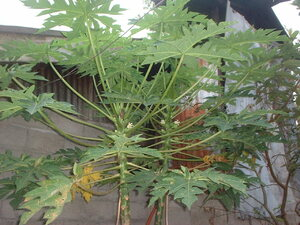
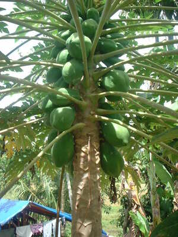
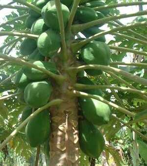

kapayas1   
/kapayas/
n.
Carica_papaya
papaya
Ka kapayas iyan ka pinamula ne egbebehas te egpekeiling te sayuti piru eggihitè te iling te gatas ka behas. Egkaayun ne egkeenen minsan meyilew wey neyinug, wey bayew malayat ka lawa kayi ne egpekeiling te kayu piru warè pused su due lungag te lawa rin. Egkahelgeleran ka dewun din wey mallayat se pakew ne duen ded degma lungag. Meilem ka behas din ke meyilew pad wey egmakalawag ke egkeyinuhan e wey igkeupii ne egkeenen te me manuk-manuk wey me mananap.
Patey ad perem te gutas ka miggendiyè te Panganan piru meupiya su due kapayas diyè te dalan.
I'm almost dying of hunger going to Panganan but fortunately there is papaya along the way.
Cult. 3-6 m. high large oblong sweet yellow edible fruit. This is not considered a tree because the trunk is fragile (malebud)
Eng. papaya; pawpaw
Tag. papáya
Ceb. kapáyas
Ilo.: papáya
OCM: Flora (137)
Online dict status: -
Usage level: B
Updated by: RJH,JLM,AAA,TME,RJH
Last updated: 13/Oct/2009
This page last updated: 19/May/2012
Copyright © 2009-2010, Matigsalug Language Christian Association, Inc